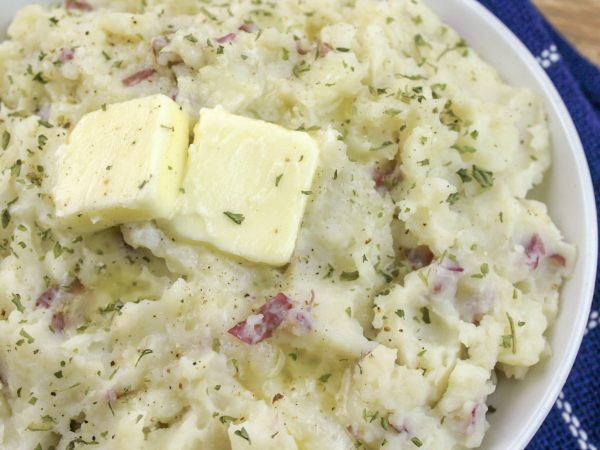

Southern Style Mashed Potatoes

These Southern Style Mashed Potatoes are the ultimate comfort food. Made with just five, well ok six if you count salt and pepper separately, ingredients they couldn’t be easier to make. These are perfect for a holiday like Thanksgiving but easy enough to enjoy any night of the week.
I love classic recipes like this one that have stood the test of time like this one for Southern Style Mashed Potatoes. This was originally my Meemaw's recipe and I have lots of fond memories of enjoying them with a big plate of fried chicken or piled on a plate with turkey and dressing.
Now I know you’re asking yourself what’s different about this Southern Style Mashed Potato recipe? I have a very simple answers the first is that this version is foolproof. After years of making these I have never had them not turn out perfectly.
ingredients
- 2-3 lbs small red potatoes
- 3/4 cup milk
- 1/4 cup chicken broth or enough to cover the potatoes
- 4 tablespoons butter
- salt and pepper to taste
Instructions
- Scrub the potatoes and if you prefer peeled potatoes peel them now
- Dice the potatoes so that they are small and close in size (dicing them to similar sizes will help ensure the potatoes cook evenly)
- Season the potatoes with salt and pepper then cover with chicken broth and bring to a boil
- Reduce heat to low and simmer for 20 minutes or until fork tender
- In a small sauce pan melt the butter and then stir in milk until combined
- Pour mixture over potatoes and mash until desired consistency